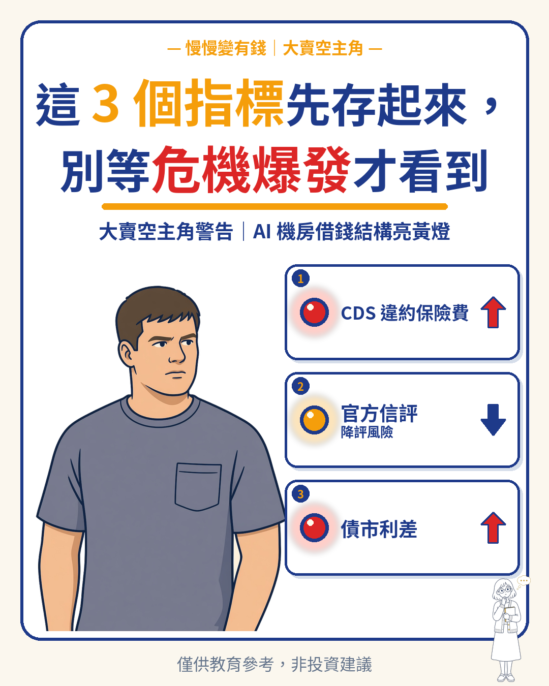

《大賣空》的原型 Michael Burry，2026 年 11 月 27 日在 X 轉發 Groundbreaker 的〈Mark to Swap〉。大意是：必讀。這不是我寫的，但一定要讀。他沒有在貼文裡自己算數字，也沒有背書每一個估算。
重點不是先唱空「AI 沒人用」，而是問：蓋資料中心的錢怎麼借來的。原文在 11 月 20 日，講的是園區多半靠大公司的租約或擔保，才借得到比較好的條件。
像買房，請富豪作保
信用不夠時，銀行不太願意把成數拉很高；請富豪作保，就比較容易談到大約九成。新創或專案公司也常這樣，請大公司當承租人、擔保人，或提供設備殘值支持。
有公開安排，不等於無限擔保
公開可查的有四個，細節以公告為準，不是無限擔保。甲骨文是 Stargate 的名義承租人、雲端營運方，OpenAI 是使用者。輝達為俄亥俄州 SB Energy 的 PORTS-Pike 園區提供有條件信用支持，供 OpenAI 長約使用，有上限和生效條件。谷歌經 Fluidstack、TeraWulf 提供租約信用支持，例如出問題時代付租金或付終止費，有的在承租人達到投資級後結束。博通是特殊目的公司買設備再租給 Anthropic，並做與第一優先債相關的殘值支持，不是替所有債務作保。
這種約定可以很大，卻不一定先出現在帳上。可以接著看表外算力承諾。
債務違約保險在量什麼
CDS（信用違約交換）是怕公司還不出錢時買的保險。1 基點是 0.01%。保險費越貴，市場越擔心，但不等於已經違約，也不等於評等被調降。
公開事實，和作者的估算
可以獨立查到的放在第一張卡。316 基點大約等於一年保險費是債務的 3.16%，對的是 11 月中旬，不是 11 月 25 日以後的價格。輝達那一格是升評。
下面的漲幅是作者引用、約 11 月中的數據，本站沒有重算。換成市場隱含評等、85%–95% 的貸款成數、園區可能少值 20%–50%，都是作者估算或模型，不是官方已降評，也不是已成交的跌價。
講整體時要說投資級信用違約交換指數（CDX），不要說成投資級債券指數。它的升幅比個股小，但不是完全沒動。也不要記成「這一年評等機構只動過一次」：標普降了甲骨文，也把輝達升到 AA；11 月初 Moody's、Fitch 仍維持甲骨文投資級。
兩種路徑，都還不是崩盤
溫和：融資變貴、變慢，新機房和晶片、建設支出的成長放慢。嚴重：擔保人信用被看壞時，估價可能先縮水；若還不出錢，虧損才可能傳到銀行、私募信貸和債券持有人。這是風險路徑，不是已經崩盤。
作者自己寫了證偽條件：保險費若回落並維持住，論點就不成立。
先存這 3 個指標
控制風險只記兩句：不要過度集中，也不要借太多錢來投資。大跌時先分清這是回檔、修正還是空頭。還沒開始投資，先處理緊急預備金和高利率負債；想對著清單做，可以免費領取《投資新手入門清單》。
來源
- Michael Burry 於 X 的轉發（2026/11/27）
- Groundbreaker〈Mark to Swap〉（2026/11/20）
- OpenAI：Stargate 與甲骨文
- 輝達新聞稿：俄亥俄園區信用支持
- 輝達 Form 8-K（2026/8/17）
- TeraWulf：谷歌信用支持（2026/11/4）
- TeraWulf Form 8-K（2026/11/4）
- 博通新聞稿：Anthropic 相關融資
- 博通 Form 8-K（2026/10/27）
- 標普：甲骨文降至 BBB-（2026/7/9）
- 甲骨文五年期 CDS 歷史行情
- irates.today：投資級 CDX（2026/11/25）